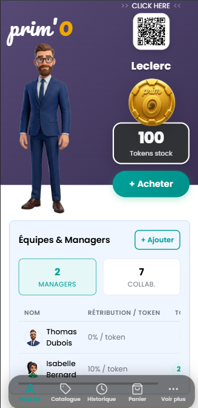
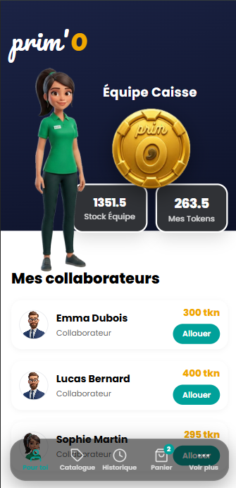
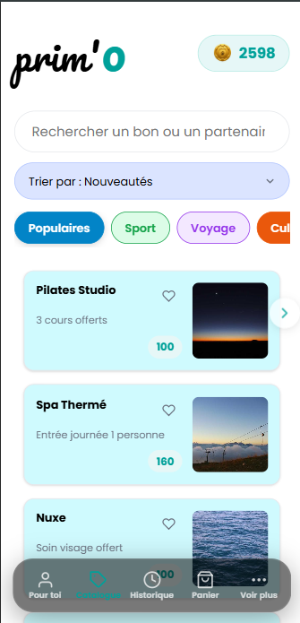
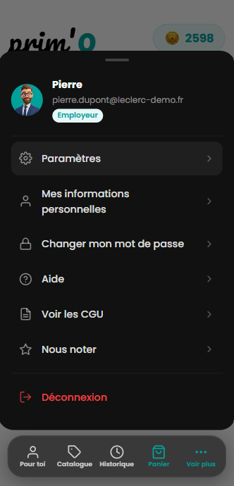

Vos efforts récompensés instantanément !
Achetez des tokens, suivez votre stock en un coup d'œil et partagez votre QR code partenaire pour recruter vos équipes. Depuis son dashboard, l'employeur garde une vue complète sur ses managers, ses collaborateurs et la répartition des rétributions.

Chaque manager dispose de son propre stock de tokens à distribuer à son équipe. D'un seul écran, il visualise le solde de sa caisse, celui de chaque collaborateur, et alloue une récompense dès qu'une performance mérite d'être saluée.

Sport, voyage, bien-être, culture... les collaborateurs parcourent un catalogue vivant de bons chez des partenaires locaux et nationaux, filtrable par catégorie, et échangent leurs tokens en quelques secondes contre la récompense de leur choix.

Chaque utilisateur retrouve son profil, ses informations personnelles et la sécurité de son compte en un tap, quel que soit son rôle dans l'entreprise — employeur, manager ou collaborateur.

PRIM'O est porté par Julien Sax et Sandrine Simonnet, et né d'un constat de terrain issu de 20 ans d'entrepreneuriat et 10 ans de conseil en marketing et management auprès de grands groupes de franchises. Le problème observé est simple mais fondamental : dans la grande majorité des entreprises, la prime ou la récompense arrive trop tard pour motiver réellement. Elle se noie dans le salaire, arrive après l'effort, et perd tout effet motivationnel. La psychologie comportementale le confirme : une récompense doit être immédiate pour être efficace.
C'est ce constat qui a convaincu Loïc Cerqueira et Véronique Beauvais, en charge du développement du projet, de s'investir dans PRIM'O : ayant eux-mêmes été salariés, ils savent combien une reconnaissance instantanée peut pousser à donner le meilleur de soi-même. Ensemble, ils ont construit une application qui permet à l'employeur de récompenser ses collaborateurs en temps réel, au moment exact où la performance se produit.
Ce projet a vu le jour en 2026, développé comme projet tutoré de fin de cursus (Portfolio Project) à la Holberton School.
Rejoignez les entreprises qui font de la reconnaissance un réflexe quotidien. Scannez le QR code ou rendez-vous sur le site pour démarrer avec PRIM'O.